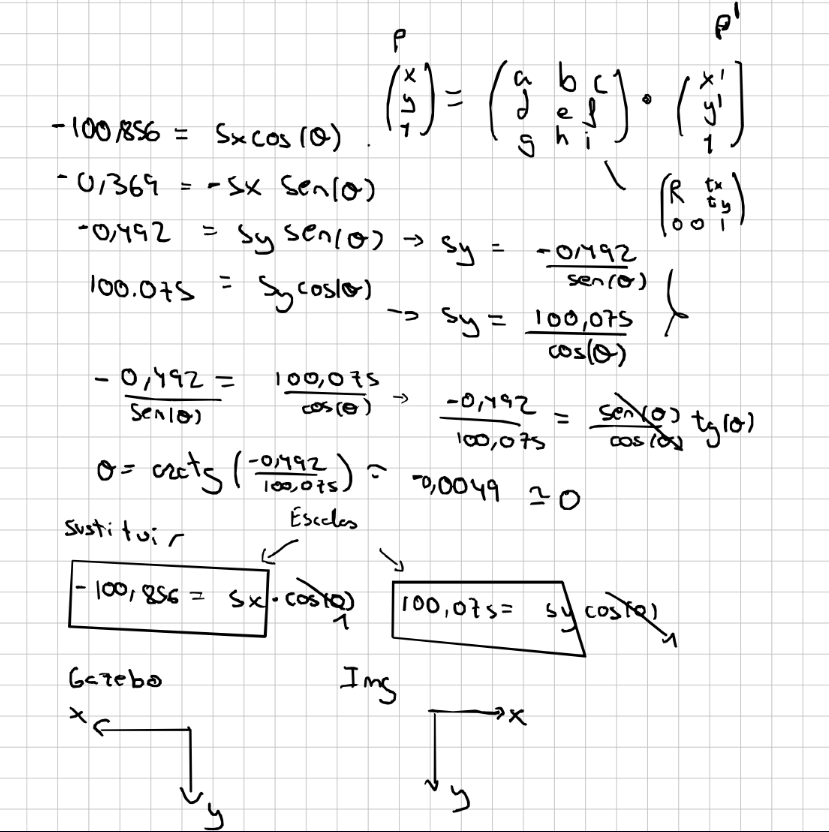

Introducción
El objetivo de la práctica es que un robot aspirador recorra las zonas transitables de un mapa conocido mientras limpia. Para planificar sus movimientos en una rejilla, primero hay que relacionar las coordenadas del mundo de Gazebo con los píxeles de la imagen del mapa. Después, el robot utiliza esa correspondencia para discretizar el mundo en una rejilla que usará para construir una ruta de exploración y seguirla usando el algoritmo BSA.
Objetivos
- Calcular una transformación entre coordenadas del mundo y coordenadas de píxel a partir de puntos correspondientes.
- Convertir el mapa en una rejilla y clasificar las celdas transitables y ocupadas.
- Planificar una ruta de cobertura con BSA, incluyendo el backtracking por celdas ya visitadas cuando se quede atascado(rodeado de celdas visitadas/obsaculos).
- Seguir la ruta con un controlador que corriga el error resultante del ruido de los actuadores
Desarrollo
Fase 1 · Registro del mapa
La imagen del mapa tiene un tamaño de 1012 × 1012 píxeles. Tomé 15 puntos visibles tanto en Gazebo como en la imagen y anoté para cada uno las coordenadas del mundo (x, y) y las coordenadas de píxel (px, py).
Con esas correspondencias ajusté por mínimos cuadrados una transformación afín homogénea. Si pmundo = [x, y, 1]T, la transformación produce el punto en la imagen: pimagen = T · pmundo.
Cálculo de la matriz en correspondencia.py
import numpy as np
# [x_gazebo, y_gazebo, px_imagen, py_imagen]
datos = [
[-0.30186, 0.9521, 588.3, 511], [0.1469, 2.85602, 562.4, 715],
[-1.6915, 2.85536, 752.5, 715], [-2.55, 1.6088, 842.5, 590],
[-3.7138, -0.8952, 954, 336], [0.9386, 2.0255, 482, 634],
[2.07344, 2.03278, 380, 634], [2.0402, -3.28678, 372, 90],
[5.1296, -3.30581, 64, 90], [5.13143, 0.15126, 63, 440],
[2.7837, 0.5715, 300, 480], [2.783, 4.4345, 295, 861],
[-2.5, 5.55336, 828, 975], [5.1232, 5.55213, 60, 980],
[5.1242, 4.8264, 56, 900]
]
P_gazebo = np.array([[fila[0], fila[1], 1] for fila in datos])
P_img = np.array([[fila[2], fila[3]] for fila in datos])
# Ajuste por mínimos cuadrados y paso a coordenadas homogéneas
T_2x3, _, _, _ = np.linalg.lstsq(P_gazebo, P_img, rcond=None)
T_2x3 = T_2x3.T
T = np.vstack([T_2x3, [0, 0, 1]])
np.set_printoptions(suppress=True, precision=3)
print(T)El ajuste dio la siguiente matriz. Los elementos de la diagonal tienen una magnitud cercana a 100 píxeles por metro; el signo negativo del primer elemento indica que el eje X de Gazebo queda invertido respecto al eje horizontal de la imagen.
T = [[-100.856, -0.369, 578.571],
[ -0.492, 100.075, 424.396],
[ 0.000, 0.000, 1.000]]
De la matriz obtuve una escala aproximada de 100,8 píxeles por metro. En el programa guardo la transformación inversa para convertir los centros de las celdas del mapa de vuelta a coordenadas del mundo.
Fase 2 · Rejilla y exploración
Dividí el mapa en celdas del tamaño aproximado del robot, cuyo diámetro es 0,34 m (explore el sistema de archivos y encontre el urdf,aunque tenia un mesh y no una primitiva con radio examine el tamaño desde la terminal con un script simple de python que usaba la libreria trimesh). Con la escala calculada, cada celda ocupa int(0,34 × 100,8) = 34 píxeles por lado. Mantengo dos representaciones: gridmap almacena el estado de cada celda para la planificación y display_map sirve para visualizar la rejilla y el recorrido.
Para marcar obstáculos, erosiono la imagen y cuento los píxeles oscuros de cada celda. Si más del 60 % son oscuros, la celda se considera ocupada.
El planificador BSA explora primero en el orden norte, este, sur y oeste. Al llegar a un punto sin celdas libres vecinas, vuelve a un punto de retorno y busca un camino por celdas . Tras revisarlo en clase, cambié a calcular la ruta completa al inicio y seguirla. Así, el planificador mantiene el orden de cobertura y el controlador se ocupa de alcanzar cada objetivo.
path antes de que empiece el movimiento.
Durante la ejecución, el bucle de control actualiza la pose del robot y, al alcanzar el objetivo actual, extrae el siguiente paso de la ruta. Para avanzar a una celda calculo su centro y lo convierto a coordenadas del mundo mediante la matriz inversa de la matriz transformación sacada del registro.
Problemas y decisiones
- Cuándo planificar la ruta. Al principio intenté recalcular el siguiente movimiento cada vez que el robot llegaba a una celda,porque a mi punto de vista aunque teniamos asegurado que no habria obstaculos dinámicos, planificar antes de cada decision hacia mas reactivo el código y aunque no se necesitaba asi tenia una implementación más "completa" y realista. Tras revisarlo en clase, se me hizo entender que los robots reales planifican al principio y si encuentran un obstaculo dinámico lo evaden y luego vuelven al path planificado, es por eso decidi cambiar y a calcular la ruta completa al inicio y seguirla. Así, el planificador mantiene el orden de cobertura y el controlador se ocupa de alcanzar cada objetivo.
- Parámetros de la rejilla. Tuve que ajustar la erosión, el porcentaje de píxeles oscuros que define una celda entera como obstáculo y el tamaño de celda. Fijé la celda al diámetro del robot y lo que si pase mucho tiempo ajustando los umbrales y kernel de erosion hasta conseguir una representación útil del mapa en la que el robot no pase por zonas en las que el robot se quede atascado fisicamente.
- Backtracking.Como se verá en el video, el robot casi al principio se deja una celda sin explorar y se tiene que volver a por ella al final, antes pasaba que tenía un backtracking simple en el que el robot seguia sus pasos hasta la ultima celda return point que habia visto, en mi caso como el robot habia estado operando 30min y la celda return point la vio en el minuto 5,esto resultaba en que el robot volvia sobre sus pasos hasta alli y tardaba 25min,por eso al final cambie el backtracking simple por una busqueda bfs que busca un atajo al return point pasando por las celdas ya visitadas
Resultados
El vídeo muestra la ejecución del robot y la visualización de la exploración. Está acelerado a ×16. (Se recomienda chrome, por ejemplo en opera no se me visualiza el vídeo).